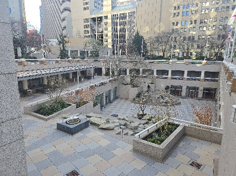
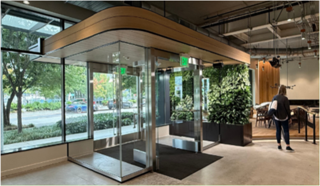
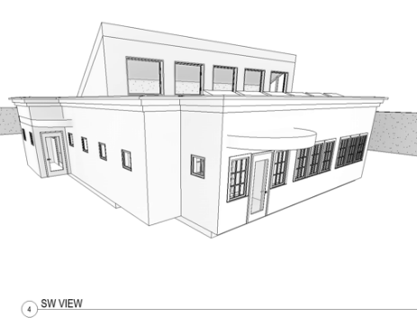

Ralph Allen, AIA
Ralph has over 40 years of experience in a vast array of project types, sizes and configurations here and around the world. His extensive background in leading complex teams to successful outcomes spans all major market sectors including healthcare, commercial, hospitality, and residential. He approaches all of his work with a strong grasp of design principles, technical insight into component performance and clear and effective communications with the client and the entire project team.
Over his career, Ralph has led the design, documentation, permitting and successful completion of
- 1.2 million SF of commercial tenant improvement space
- $300m+ worth of building envelope expert review, associated repair, and reconstruction projects on multi-family, commercial and single family structures
- Multiple planning studies for hospitals, multi-family, and commercial property developments
- 1.4 million+ SF of highly technical hospital and health care facilities
Relevant experience
Harborview Bond Issue – MIMP Revision & miscellaneous project planning
Ralph led the TGB Architect’s team in finalizing the revisions to the MIMP currently in public comment. He also worked on developing several associated planning studies for parking and new behavior health structures within the MIO boundary and on adjacent properties.
Western State Hospital
Ralph led the planning and design of the new TRC unit being developed in the existing campus and served as project manager for both an extensive anti-ligature renovation of several wards, and the current fire door replacement project.
Project HOPE, Shanghai Children’s Medical Center, Shanghai, China
Ralph led the consulting team for Project HOPE during the planning and development of the Shanghai Children’s Medical Center — the first tertiary care, pediatric teaching facility built to a modern hospital standard in Asia. He was a Senior Associate at NBBJ at the time.
Two Union Square, Washington Holdings, LLC, Seattle, WA | $10m | 40,000 SF
Ralph was both Project Manager and Project Architect for the full plaza replacement and re-design project at the Two Union Square property in downtown Seattle. This involved a full acre of public plaza space on 3 levels all over existing occupied spaces below, and the addition of new highly refined design elements.
1101 Westlake – Main lobby renovations
1101 Westlake LLC, part of BioMed Realty’s portfolio, unveiled its newly renovated main lobby — a space reimagined to deliver an elegant and inviting environment that sets the tone for an exceptional tenant and guest welcome. Ralph led the TGB team for this work.
Rural Health Care Clinic: Surmang Foundation, Tibet | 5,000 SF
Ralph is a board member for the Surmang Foundation which provides critical patient care services to a remote indigenous population in a high valley in Tibet. He is currently designing a new rural health care clinic for this group. In the 30+ years of its existence the Surmang foundation has affected the reduction of mother and infant mortality from a 70+% level to 0%.
A few project stories
|
1. The 9th&Alder Behavior Health Tower is a concept solution designed to maximize the available envelope on this site while satisfying the BH program as well as additional Harborview hospital functions. A functional and attractive architectural concept arose allowing for a large south facing roof deck available to patient and staff alike. Ralph managed the building core planning and developed the Revit modelling for this project while at TGB Architects. |

|
|
2. The initial designs for the TRC unit at the Western State Hospital leveraged the corridor transition points to emphasize both staff connectivity to the patient population at one end, and a point of arrival at a patient centered amenity at the other end. The detail plan shown is the latter and represents a level of development in support a quality patient experience. This particular element is being re-considered in a VE effort for the project. Ralph is the lead planner / designer for this work. |

|
|
3. The Shanghai Children’s medical center began as a 250 bed greenfield hospital, with a fully modern surgical suite, diagnostic modalities and building MEPC systems. It was the first of its kind in Asia and has since grown considerably over the decades hence. Ralph led the NBBJ consulting team supporting Project HOPE in working with one of the largest AE firms in China on what was one of the top 5 important projects for the Central Government. The project was completed in under 3 years. |

|
|
4. The public plaza waterproofing project at Two Union Square covered a one acre plaza on multiple levels. With the owner’s inspired guidance new stairways, paving patterns and covered area canopies were added to enhance the tenant and public experience of this landmark public space in downtown Seattle. Ralph led the planning and design of this project while at Evolution Architecture. |
 |
|
5. Sometimes we have the chance to execute a small project to a very high level of design aspiration and detail. The Lobby renovation at 1101 Westlake is one of these. With an inspired and insightful owner leading the dialog, the TGB / Turner team accomplished a truly unique and standout finished space. |
 |
|
6. The Surmang Foundation is a passion project of mine for many years. The new clinic design is scaled back from previous full campus versions to a 2 exam room facility to support the two Tibetan doctors on staff. Care is always completely free, and the clinic, serving a large catchment area of small rural villages, sees over 20,000 patient visits annually. We are currently fund raising for both the new clinic and ongoing operational funding. |
 |